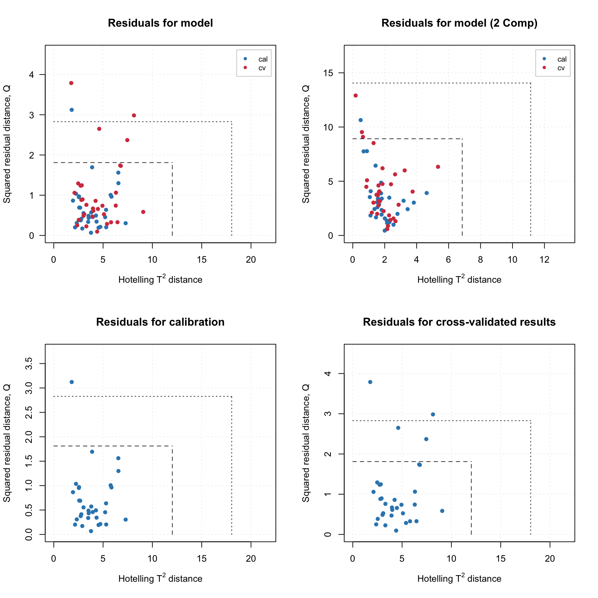
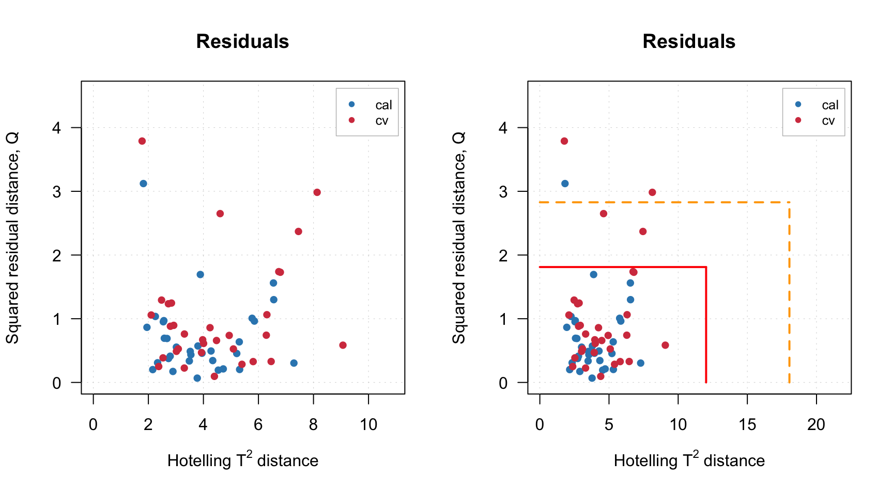
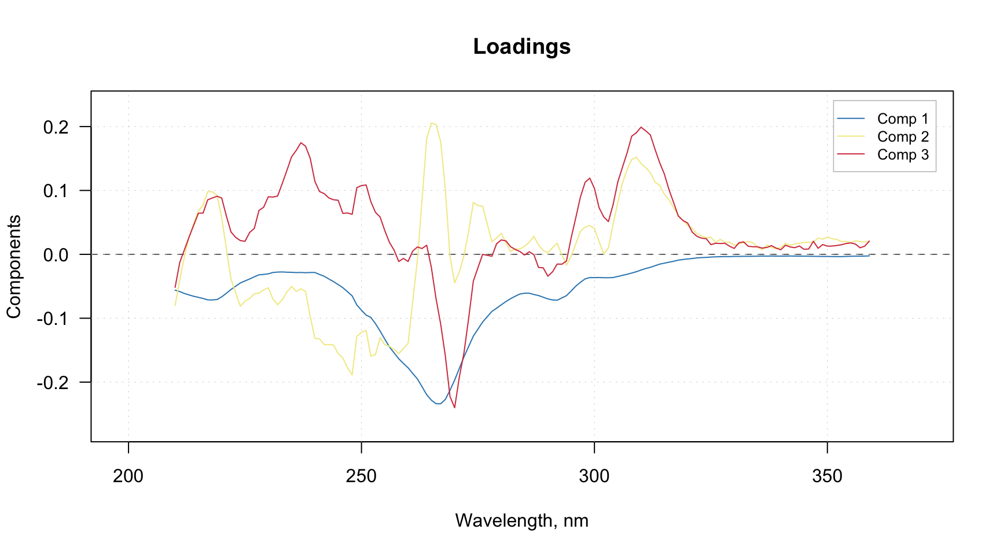
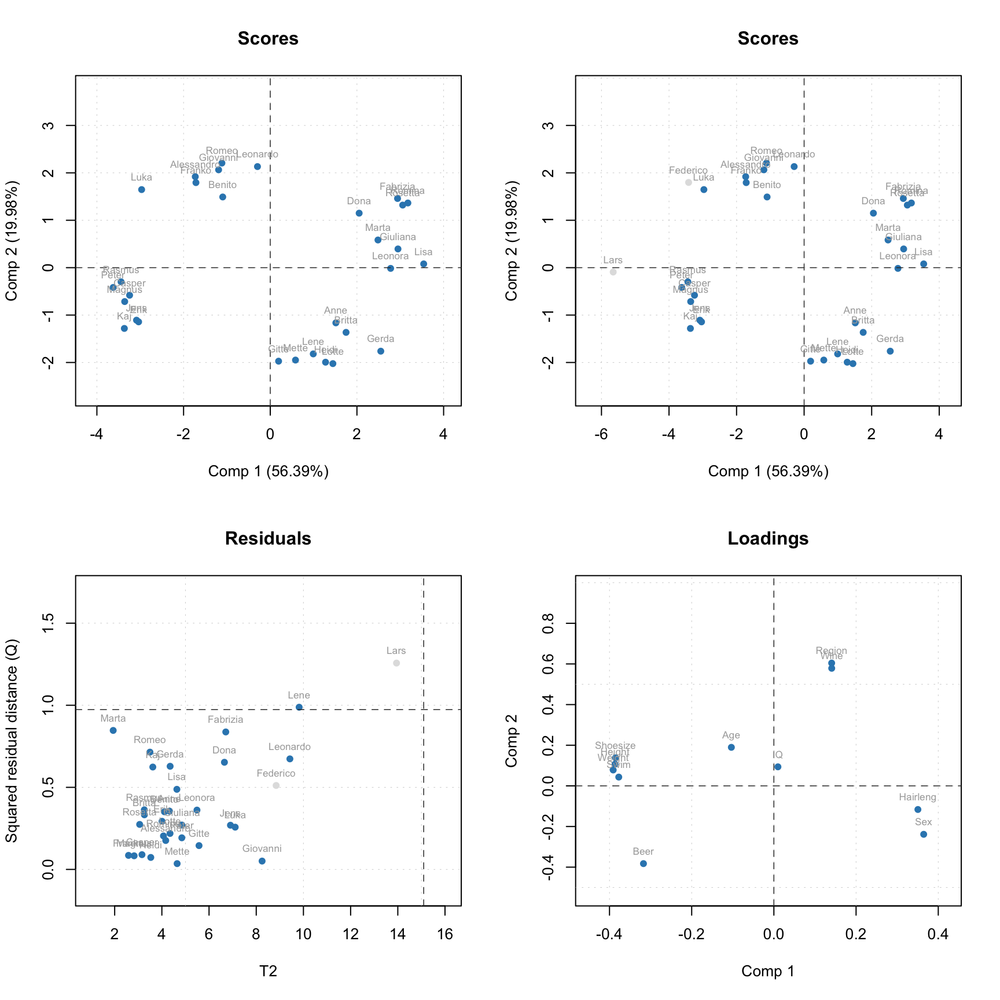

Residuals and critical limits
Distance to model and score distance
When data objects are being projected to a principal component space, two distances are calculated and stored as a part of PCA results (pcares object). The first is a squared orthogonal Euclidean distance from original position of an object to the PC space, also known as Q-distance or Q-residual (as it is related to residual variation of the data values). The distance shows how well the object is fitted by the PCA model and allows to detect objects that do not follow a commond trend, captured by the PCs.
The second distance shows how far a projection of the object to the PC space is from the origin. This distance is also known as Hotelling T2 distance or a score distance. To compute T2 distance scores should be first normalized by dividing them to corresponding singular values. The T2 distance allows to see extreme objects — which are far from the origin.
If, for example, we use PCA for making decomposition of height and weight of people, then PC1 will be oriented along a linear trend between the height and weight values common for most of the people. If a person has height and weight within the data range but e.g. is overweighted or underweighted, the corresponding object will have large Q-distance, which indicates that this person does not share the common trend. And, if a person has a ratio between height and weight common for most of the people from the dataset, but, e.g. is too tall, then the corresponding object will have large T2 distance.
In mdatools both distances are calculated for all objects of dataset and all possible components. So every distance is represented by nObj x nComp matrix, the first column contains distances for a model with only one component, second — for model with two components, and so on. The distances can be visialised using method plotResiduals() which is available both for PCA results as well as for PCA model. In the case of model the plot shows distances for calibration set, cross-validation and test set (if they were used of course).
Here is an example.
data(people)
m = pca(people, 4, scale = T, cv = 1)
par(mfrow = c(2, 2))
plotResiduals(m, main = 'Residuals for model')
plotResiduals(m, ncomp = 2, main = 'Residuals for model (2 Comp)')
plotResiduals(m$calres, main = 'Residuals for calibration')
plotResiduals(m$cvres, main = 'Residuals for cross-validated results')
The dashed and dotted lines on the plots are critical limits for extreme objects and for outliers, explained in the next section. They can be hidden/removed from the plots by using additional parameter show.limits = F. You can also change the color, line type and width for the lines by using options lim.col, lim.lty and lim.lwd as it is shown below.
par(mfrow = c(1, 2))
plotResiduals(m, show.limits = F)
plotResiduals(m, lim.col = c('red', 'orange'), lim.lwd = c(2, 2), lim.lty = c(1, 2))
It is necessary to provide a vector with two values for each of the argument (first for extreme objects and second for outliers border).
Critical limits
If PCA model is made for dataset taken from the same poulation, Q and T2 distances can be used to find outliers and extreme objects. One of the ways to do it is to use critical limits for the distances assuming that they follow certain theoretical distribution.
Critical limits are also important for SIMCA classification as they directly used for making decision on class belongings. This package implements several methods to compute the limits, which are explained in this section.
Critical limits for score distance (T2-distance)
The distribution of T2-distances can be well described using Hotelling’s T2 distribution, which, in its turn is based on F-distribution. For given T2 values obtained for N objects using A principal components, the critical limit, T2lim can be computed as follows:
\[T2lim = \frac{A (N - 1)}{(N - A)} F^{-1}_{1-\alpha}(A, N-A)\] Here \(F^{-1}_{1-\alpha}(A, N-A)\) is inverse cumulative distribution function (ICDF) for F-distribution with \(A\) and \(N-A\) degrees of freedom and \(\alpha\) is a significance level (for example if \(\alpha = 0.05\) we can expect 5% of objects that will have T2-distance larger than this limit).
In mdatools the limits are computed based on calibration results and for all possible number of components. The limits are represented as a matrix with four rows and \(A\) columns, where the first row contains the limits computed for given alpha parameter (by default alpha = 0.05), second row has similar limits but calculated using another significance level, gamma (by default gamma = 0.01), third row contains mean value for the T2 distances and last row contains degrees of freedom, in this case \(N-A\). The limits calculated for gamma are used to detect outliers and shown on residuals plot with dotted line.
Here is the limits shown for PCA model computed in the previous example.
show(m$T2lim)## Comp 1 Comp 2 Comp 3 Comp 4
## Critical limit (alpha = 0.05) 4.159615 6.852714 9.40913 12.01948
## Outliers limit (gamma = 0.01) 7.529766 11.140048 14.55224 18.04214
## Mean (u0) 0.968750 1.937500 2.90625 3.87500
## DoF 31.000000 30.000000 29.00000 28.00000So, you can see that the critical limit for model with 2 PCs is 6.85 and for model with 4 PCs is 12.02. This is exactly what can be seen as vertical dashed line on the two top residual plots shown in the figure above (left for 4 PCs and right for 2 PCs).
Critical limits for orthogonal distance (Q-residuals)
The calculation of critical limits for Q-residuals can be done in many different ways. Thus, Swante Wold and Michael Sjöström in the original paper about SIMCA classification suggested that the ratio between Q-distance for a particular object from dataset with \(M\)-variables (divided to the corresponding degrees of freedon, \(M-A\)) and the variance of all Q-residuals follows F-distribution with \(M-A\) and \((N-A-1)(M-A)\) degrees of freedon. And, therefore, the limit can be found using ICDF for F-distribution.
This method tends to reveal more extreme values than expected, first of all because of \((N-A-1)(M-A)\), which is a very big number for modern datasets with hundreds of objects and variables. Several corrections have been proposed since that, most of them are based on using different ways to estimate the degrees of freedom.
Using chi-squared distribution
On the other hand, several researchers, have found that normalized Q-distances can be well described by chi-squared distribution. The tricky part here is to find proper degrees of freedom as it requires rank of original data matrix, which most of the time is not known. One of the ways to solve this issue is to compute the DF based on the particular Q-values, for example as follows:
\[ DF = 2\left(\frac{m(Q)}{s(Q)}\right)^2\] Here \(m(Q)\) and \(s(Q)\) are mean and standard deviation for Q-values. In this case, the critical limit for given significance level, \(\alpha\), can be calculated as: \[Qlim = F^{-1}_{1-\alpha}(DF) m(Q)/DF\]
where \(F^{-1}_{1-\alpha}(DF)\) is ICDF for chi-squared distribution with \(DF\) degrees of freedom. Starting from version 0.9.0 this method is implemented in pca class and can be chosen by specifying argument lim.type = 'chisq' as shown in the example below.
m = pca(people, 4, scale = T, lim.type = 'chisq')
show(m$Qlim)## Comp 1 Comp 2 Comp 3 Comp 4
## Critical limit (alpha = 0.05) 9.255125 7.374318 3.648798 1.5596846
## Outliers limit (gamma = 0.01) 11.851868 10.319291 5.105964 2.3976151
## Mean (u0) 5.396236 3.223765 1.656619 0.6898182
## DoF 9.864674 4.147666 4.307598 2.6499084The matrix with limits for Q-resodials has the same structure as similar matrix for T2-distances The third row contains mean values for Q and the fourth row — degrees of freedom calculated as shown above.
Jackson-Mudholkar method
Another method has been proposed by Jackson and Mudholkar and is based on using eigenvalues of the residual components thus requires a full decomposition of the data matrix, which makes it computationally heavy if the data is large.
Before the version 0.9.0 this method was the only one available for Q limits in mdatools and therefore still remains the default method (although you can specify it explicitly by using option lim.type = 'jm'). Here is an example.
m1 = pca(people, 4, scale = T) # default value for lim.type
m2 = pca(people, 4, scale = T, lim.type = 'jm') # specify JM as selected method
# the calculated limits are the same
show(m1$Qlim)## Comp 1 Comp 2 Comp 3 Comp 4
## Critical limit (alpha = 0.05) 13.982084 8.915238 4.866821 1.8112567
## Outliers limit (gamma = 0.01) 21.018106 14.057968 8.284831 2.8278312
## Mean (u0) 5.396236 3.223765 1.656619 0.6898182
## DoF 1.000000 1.000000 1.000000 1.0000000show(m2$Qlim)## Comp 1 Comp 2 Comp 3 Comp 4
## Critical limit (alpha = 0.05) 13.982084 8.915238 4.866821 1.8112567
## Outliers limit (gamma = 0.01) 21.018106 14.057968 8.284831 2.8278312
## Mean (u0) 5.396236 3.223765 1.656619 0.6898182
## DoF 1.000000 1.000000 1.000000 1.0000000Data driven approach for critical limits
Later, it was realized (see for example this and this) that chi-squared distribution can be used for both Q- and T2-distances and it is possible to construct a combined limit for both.
A. Pomerantsev proposed and then extended an approach, based on similar idea but with a new way for calculation of a combined index, which is now called Data Driven SIMCA (DD-SIMCA). Although the method was developed for SIMCA classification, it is based on calculation of critical limits and therefore can be also used in PCA for similar purposes — detection of extreme objects and outliers based on the residual distances.
In this method it is assumed that Q- and T2-values are not independent and there is a combined statistic: \(DF_Q Q/m(Q) + DF_{T^2} T^2 / m(T^2)\) which follows chi-squared distribution with \(DF_Q + DF_{T^2}\) degrees of freedom. The \(DF_Q\) and \(DF_{T2}\) as well as the center estimates, \(m(Q)\) and \(m(T^2)\) are derived from the \(Q\) and \(T^2\) values computed for the calibration set.
There are two ways to estimate them. First is by using classical method of moments, already mentioned:
\[ DF_Q = 2\left(\frac{m(Q)}{s(Q)}\right)^2\] \[ DF_{T^2} = 2\left(\frac{m(T^2)}{s(T^2)}\right)^2\]
And the second is based on robust approach utilizing median and inter-quartile range instead of mean and standard deviation (see the paper for details).
Both ways are implemented in the package (starting from version 0.9.0) and can be selected by using option lim.type = 'ddmoments' or lim.type = 'ddrobust' correspondingly. Since the acceptance area in this case is not rectangular but triangular, the matrices with calculated limits contain slope (T2lim) and intercept (Qlim) of the border line for the acceptance area instead of individual limits.
For example, if we compute the limits as follows:
m = pca(people, 4, scale = T, lim.type = 'ddmoments')The matrices will look like this:
show(m$Qlim)## Comp 1 Comp 2 Comp 3 Comp 4
## Critical limit (alpha = 0.05) 11.346164 19.088550 11.425334 6.3433641
## Outliers limit (gamma = 0.01) 19.472004 31.770167 18.328590 10.1760634
## Mean (u0) 5.396236 3.223765 1.656619 0.6898182
## DoF 10.000000 4.000000 4.000000 3.0000000show(m$T2lim)## Comp 1 Comp 2 Comp 3 Comp 4
## Critical limit (alpha = 0.05) -1.114062 -4.159697 -1.852563 -0.8307488
## Outliers limit (gamma = 0.01) -1.114062 -4.159697 -1.852563 -0.8307488
## Mean (u0) 0.968750 1.937500 2.906250 3.8750000
## DoF 2.000000 10.000000 13.000000 14.0000000This means that, for example, for two components the line is defined as: \[Q = -4.16 T^2 + 19.1\] and for four components as: \[Q = -0.83 T^2 + 6.34\] And will look on the residuals plot as follows:
par(mfrow = c(1, 2))
plotResiduals(m, ncomp = 2)
plotResiduals(m, ncomp = 4)
More details about DD-SIMCA method can be also found in chapter, devoted to SIMCA classification.
The residuals plot can be also shown for normalized values (\(Q/m(Q)\) vs. \(T^2/m(T^2)\)) by using option norm = T in the plotResiduals() method.
par(mfrow = c(1, 2))
plotResiduals(m, ncomp = 2, norm = T)
plotResiduals(m, ncomp = 4, norm = T)